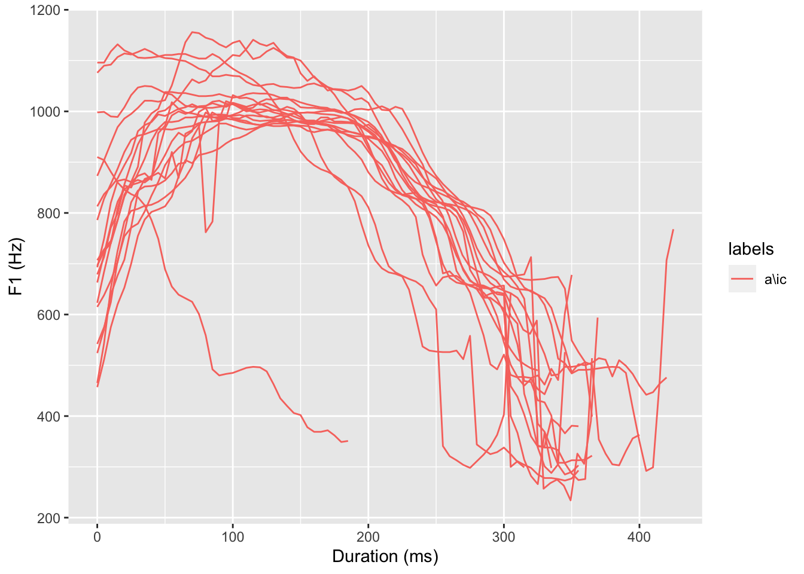
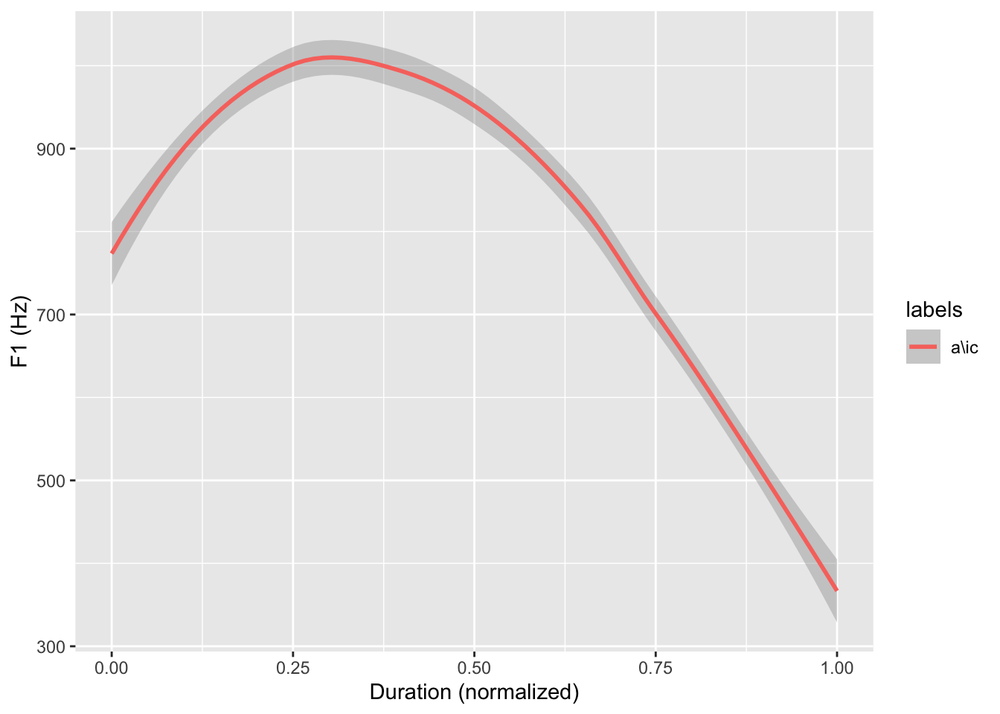
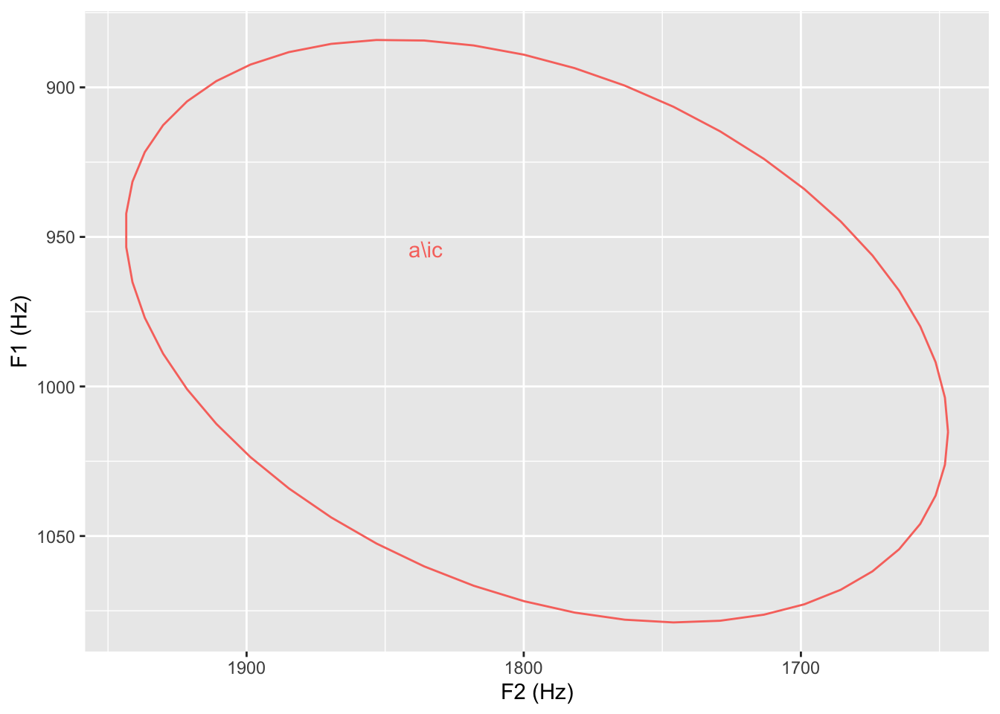
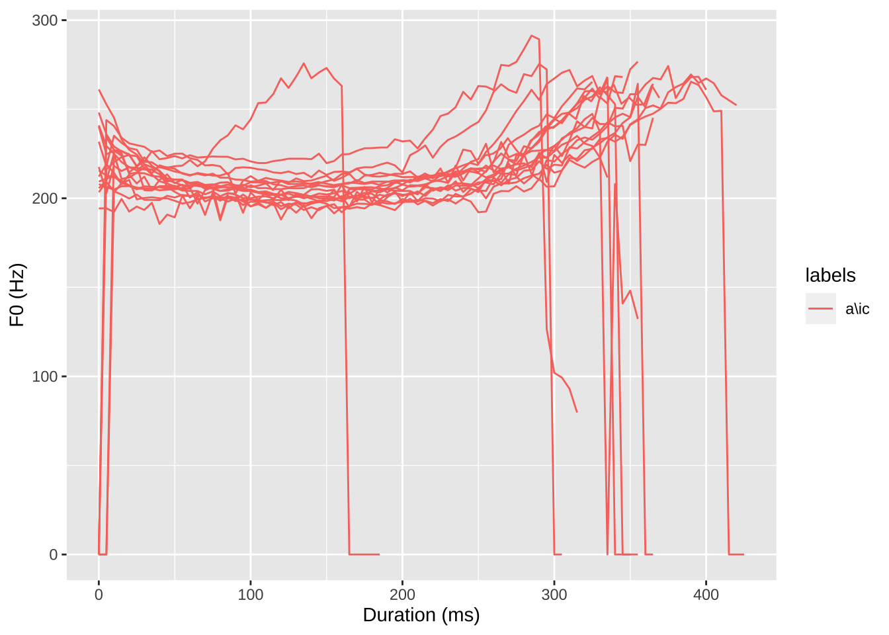
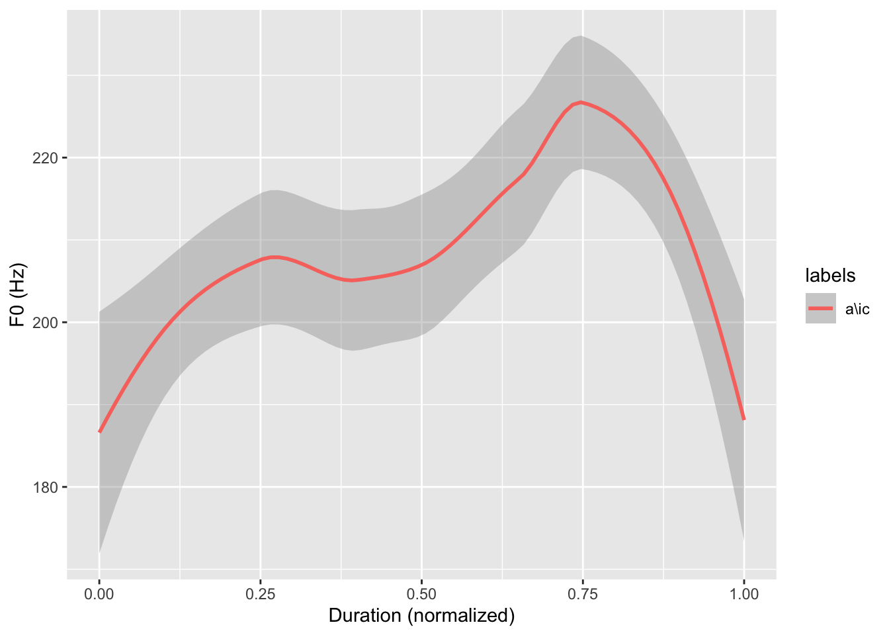

Chapter 7 第七章 语音数据分析
语音数据在我们的生活中无处不在，从微信语音消息到智能音箱，不断提高着我们的生活质量。语音是声音的一种，是由人类的发音器官发出的声音。从声学上，语音是一种声波。对于声波我们可以分析它的时长和频率。常见的语音分析软件有Praat，可以提供各种各样的语音声学指标的提取。用Praat提取的结构化语音数据，经过数据整理，数据转化，可以像语言实验数据一样进行分析。 本章我们从数据科学的角度，介绍R语言中的一个语音库构建程序包EMU-R。 EMU语音库管理系统（the EMU Speech Database Management System，简称 EMU-SDMS）是集语音库建立、控制、检索、分析和管理为一体的多种软件工具的集合体。该系统最早由澳大利亚麦考瑞大学的语音学家Harrington开发的mu+系统(Harrington et al., 1993)，后来发展为EMU软件(Cassidy & Harrington, 2001)。为了适应大数据时代的发展，兼容不同平台，Winkelmann等人将EMU软件的整体构想和功能保留，使用R语言及相关工具包作为依托，优化升级创建了新系统，即EMU-SDMS。由于R语言本身是开源免费的开发环境，EMU-SDMS系统也是完全免费供研究人员使用。EMU-SDMS系统包含三个软件部分：emuR工具包负责语音库构建和管理；wrassp工具包负责声学数据的处理；EMU-webApp负责语音数据的标注。 与目前的语音库管理系统相比，EMU-SDMS系统有三个优点。 第一，EMU-SDMS系统的数据结构既包含基于时间（time-based）语音信息，也包含层级性的语音信息。传统的语音标注系统和软件，如Praat必须也只能标注基于时间的语音信息。 第二，EMU-SDMS系统是第一个使用网页端作为语音标注界面的语音数据管理系统。网页端的标注界面可以单独使用，用户可以对自己加载的语音库进行标注。 第三，EMU-SDMS系统可以基于检索结果，在线提取语音库中的声学数据（如基频，共振峰）或发音生理数据（如电磁发音数据，electromagnetic articulography，简称 EMA）。传统的语音所有学数据处理流程是将所有数据提取和保存，再通过检索的方式获得。如果修改数据标注，或者修改检索条件，提取数据将会困难且容易出错。
7.1 语音库创建
语音库的构建离不开录音材料的准备、发音人的选取、录音等工作，本文重点在于如何基于语音数据构建语音库，因此对数据收集不做赘述。EMU-SDMS系统可以基于原始声音数据，直接创建语音库，然后用其EMU-webApp进行语音数据的标注，也可以基于已经标注的语音数据（声音文件和Textgrid文件）来创建语音库。如果是根据原始声音文件直接创建语音库，需要首先自定义语音库标注的层级，每一层的属性，以及层与层的关系。如果是根据已经标注的语音数据，程序包会默认将标注文件的层级设置为语音库的层级。
##
## Attaching package: 'emuR'## The following object is masked from 'package:base':
##
## normlibrary(tidyverse)
setwd("~/Nutstore Files/310_Tutorial/LanguageDS-e")
# 设置语音库的位置
corpusPath = "data/ch7/speech_corp"
#
# # 设置已经标注的语音文件 .wav 和标注文件.TextGrid files的位置
# path2folder = "/Users/chenjuqiang/Desktop/AmE_Consonants/"
#
# # 基于语音文件和对应标注文件构建 emuDB 语音库
# # 注意：这一步只需要一次，语音库建设完成后不需要重复构建
# convert_TextGridCollection(dir = path2folder,
# dbName = "AmE_Consonants",
# targetDir = corpusPath)
#
# # 将语音库文件位置设置为一个变量
AMECpath = paste(corpusPath, "/AmE_Consonants_emuDB",sep = "")
# 将语音库载入R语言环境
# 注意这一步每次都需要先运行
AmeC.corp = load_emuDB(AMECpath, verbose = FALSE)
# 了解一下语音库
summary(AmeC.corp)## ## ── Summary of emuDB ─────────────────────────────────────────────────────────## Name: AmE_Consonants
## UUID: 6280f273-9c1b-4fae-ae01-99413dda6fb8
## Directory: /Users/chenjuqiang/Nutstore Files/310_Tutorial/LanguageDS-e/data/ch7/speech_corp/AmE_Consonants_emuDB
## Session count: 1
## Bundle count: 24
## Annotation item count: 338
## Label count: 338
## Link count: 0## ## ── Database configuration ───────────────────────────────────────────────────## ## ── SSFF track definitions ──## ## data frame with 0 columns and 0 rows## ── Level definitions ──## name type nrOfAttrDefs attrDefNames
## token SEGMENT 1 token;
## word SEGMENT 1 word;
## segment SEGMENT 1 segment;
## closure SEGMENT 1 closure;
## burst SEGMENT 1 burst;
## aspiration SEGMENT 1 aspiration;## ── Link definitions ──## data frame with 0 columns and 0 rows我们可以看到，构建的语音库由24个语音文件（Bundle count），在这些文件中共有338个标注信息。每个文件有6层，分别为token, word, segment, closure, burst, aspiration。需要注意的是，我们如果使用Praat对语音文件进行标注，最好再标注工作开始之前确定好标注层数和名称，并用脚本生成对于的标注文件，确保语音库中所有标注文件的层数和名称（包括大小写）是完全相同的。否则会出现无法构建语音库的情况。
7.1.1 检索相关语音信息
EMU-SDMS系统的最大优点是拥有强大的检索系统，可以完成固定语音元素查找（例如某个元音），基于正则表达式的模糊查找，以及不同层级多重条件限定的复杂查找。其中，不同层级多重条件限定的复杂查找，可以回答研究问题，比如元音的高低是否收到所在语音环境包括辅音，音节位置，甚至句中位置的影响。在传统的语音库数据处理中，这种检索实现很难，需要复杂的步骤，因为传统的语音库标注中每个层级之间是没有关联的。EMU-SDMS系统的灵活检索，使得语音库研究的数据探索更加高效。
EMU-SDMS系统的另一个优点是基于检索结果的声学分析。传统的语音库数据提取完成后会保存下来，占据很大的空间，特别是语音库标注修改过程中版本控制很难。EMU-SDMS系统可以基于检索结果直接通过wrassp程序包进行声学分析，可以快速的得到所研究的语音目标的声学特征，而不要对于整个语料库进行声学分析。这使得语音分析的流程更加高效。
EMU-SDMS系统可以无缝和R语言的其他数据处理，可视化，建模的程序包对接，不需要产生不必要的中间数据，减少版本或人工操作错误的可能性。
下面我们分别提取语音中的三个常见指标，时长、基频和共振峰。
## # A tibble: 6 × 16
## labels start end db_uuid session bundle start_item_id end_item_id level
## <chr> <dbl> <dbl> <chr> <chr> <chr> <int> <int> <chr>
## 1 "" 0 74.9 6280f273… 0000 azure 7 7 segm…
## 2 "\\ae" 74.9 191. 6280f273… 0000 azure 8 8 segm…
## 3 "\\zh" 191. 305. 6280f273… 0000 azure 9 9 segm…
## 4 "u" 305. 498. 6280f273… 0000 azure 10 10 segm…
## 5 "\\sw" 498. 651. 6280f273… 0000 azure 11 11 segm…
## 6 "" 651. 735. 6280f273… 0000 azure 12 12 segm…
## # ℹ 7 more variables: attribute <chr>, start_item_seq_idx <int>,
## # end_item_seq_idx <int>, type <chr>, sample_start <int>,
## # sample_end <int>, sample_rate <int>7.2 时长提取
# 检索语音库中的鼻音和爆破音
nasals = query(AmeC.corp, query = "segment==n")%>%
mutate(type = "nasals")
plosives = query(AmeC.corp, "segment==b|p|t|d|k|g")%>%
mutate(type = "plosives")
#计算各自的时长
duration.df = rbind(nasals,plosives)%>%
mutate(duration = end-start)%>%
select(labels, type, duration, bundle)
duration.df ## # A tibble: 10 × 4
## labels type duration bundle
## <chr> <chr> <dbl> <chr>
## 1 n nasals 148. chin
## 2 n nasals 165. gin
## 3 n nasals 53.7 nigh
## 4 b plosives 18.5 buy
## 5 d plosives 17.1 die
## 6 g plosives 21.2 guy
## 7 k plosives 82.2 kite
## 8 t plosives 231. kite
## 9 p plosives 97 pie
## 10 t plosives 74.5 tie7.3 共振峰提取
# 元音ai在Praat中的标注是“a\\ic”,
vwl = query(AmeC.corp, query = "segment== a\\ic")
# 提取共振峰信息
# 所得表格中最后为共振峰信息，T1、T2、T3、T4
vwl.fm = get_trackdata(AmeC.corp, vwl,
onTheFlyFunctionName = "forest",
resultType = "emuRtrackdata")## Warning in get_trackdata(AmeC.corp, vwl, onTheFlyFunctionName = "forest", : The emusegs/emuRsegs object passed in refers to bundles with in-homogeneous sampling rates in their audio files! Here is a list of all refered to bundles incl. their sampling rate:
## session bundle media_file sample_rate md5_annot_json
## 1 0000 buy buy.wav 20000 59639695211954ddb3e36ff5978900e7
## 2 0000 die die.wav 20000 893d54219221b71cef3fdb6f7b5e3d98
## 3 0000 fie fie.wav 20000 bea76ca68ea7e633942ae47b297c6b8f
## 4 0000 guy guy.wav 20000 16488b8b385da79c6e4243fbb0bb0eb3
## 5 0000 high high.wav 20000 ec2a22f18c2854e68b0851e79c7fcfb3
## 6 0000 kite kite.wav 20000 e8c91461c11d0c80435ddf54e56afcbd
## 7 0000 lie lie.wav 20000 09954d57f5b94a7c0d5763f154712ad5
## 8 0000 my my.wav 20000 1c5333b5c56ff005e37c1bd249b71819
## 9 0000 nigh nigh.wav 20000 1a9efacfafe1718d9b51322a3d71af14
## 10 0000 pie pie.wav 20000 b3d05e6277fe8892e7117fe25ef48460
## 11 0000 rye rye.wav 20000 d8d76184b99f972d62290432c571e2ca
## 12 0000 shy shy.wav 20000 359535c49c56d59f8a99aed2b78dd288
## 13 0000 sigh sigh.wav 20000 28b3d66baf0232553a744a8fcfffe498
## 14 0000 thigh thigh.wav 20000 470573b53a3e657a7400f3769304665d
## 15 0000 thy thy.wav 20000 ab204ada14eaee2ad3ae12c0954fb849
## 16 0000 tie tie.wav 20000 7f03f2dbafe1e8125eef39bbf4b92997
## 17 0000 vie vie.wav 20000 eb769439797466b5903acb51fac43694
## 18 0000 why why.wav 22050 357bff9530cf2f5145a46e3f059865f2##
## INFO: applying forest to 18 segments/events
##
|
| | 0%
|
|==== | 6%
|
|======= | 11%
|
|=========== | 17%
|
|=============== | 22%
|
|=================== | 28%
|
|====================== | 33%
|
|========================== | 39%
|
|============================== | 44%
|
|================================== | 50%
|
|===================================== | 56%
|
|========================================= | 61%
|
|============================================= | 67%
|
|================================================ | 72%
|
|==================================================== | 78%
|
|======================================================== | 83%
|
|============================================================ | 89%
|
|=============================================================== | 94%
|
|===================================================================| 100%# load package
library(ggplot2)
# 第一共振峰
ggplot(vwl.fm ) +
aes(x = times_rel, y = T1, col = labels, group = sl_rowIdx) +
geom_line() +
labs(x = "Duration (ms)", y = "F1 (Hz)")
# 将共振峰信息进行时长归一化
td_vowels_norm = normalize_length(vwl.fm)
ggplot(td_vowels_norm) +
aes(x = times_norm, y = T1, col = labels, group = labels) +
geom_smooth() +
labs(x = "Duration (normalized)", y = "F1 (Hz)") ## `geom_smooth()` using method = 'loess' and formula = 'y ~ x'
# 下面我们提取共振峰中最稳定的部分，中间点
td_vowels_midpoint = td_vowels_norm %>%
filter(times_norm == 0.5)
# 计算元音在一、二共振峰的中心点
td_centroids = td_vowels_midpoint %>%
group_by(labels) %>%
summarise(T1 = mean(T1), T2 = mean(T2))
# 画元音的位置图
ggplot(td_vowels_midpoint, aes(x = T2, y = T1, colour = labels, label = labels)) +
geom_text(data = td_centroids) +
stat_ellipse() +
scale_y_reverse() + scale_x_reverse() +
labs(x = "F2 (Hz)", y = "F1 (Hz)") +
theme(legend.position="none")
7.4 基频分析
基频是语音中音高的声学基础。所有响音（如元音和鼻音）都有基频。我们说话的语调也是由基频的变化体现的。此外，一些语言如汉语使用基频区分不同词的意思，又称声调。
vwl.f0 = get_trackdata(AmeC.corp, vwl,
onTheFlyFunctionName = "ksvF0",
resultType = "emuRtrackdata")## Warning in get_trackdata(AmeC.corp, vwl, onTheFlyFunctionName = "ksvF0", : The emusegs/emuRsegs object passed in refers to bundles with in-homogeneous sampling rates in their audio files! Here is a list of all refered to bundles incl. their sampling rate:
## session bundle media_file sample_rate md5_annot_json
## 1 0000 buy buy.wav 20000 59639695211954ddb3e36ff5978900e7
## 2 0000 die die.wav 20000 893d54219221b71cef3fdb6f7b5e3d98
## 3 0000 fie fie.wav 20000 bea76ca68ea7e633942ae47b297c6b8f
## 4 0000 guy guy.wav 20000 16488b8b385da79c6e4243fbb0bb0eb3
## 5 0000 high high.wav 20000 ec2a22f18c2854e68b0851e79c7fcfb3
## 6 0000 kite kite.wav 20000 e8c91461c11d0c80435ddf54e56afcbd
## 7 0000 lie lie.wav 20000 09954d57f5b94a7c0d5763f154712ad5
## 8 0000 my my.wav 20000 1c5333b5c56ff005e37c1bd249b71819
## 9 0000 nigh nigh.wav 20000 1a9efacfafe1718d9b51322a3d71af14
## 10 0000 pie pie.wav 20000 b3d05e6277fe8892e7117fe25ef48460
## 11 0000 rye rye.wav 20000 d8d76184b99f972d62290432c571e2ca
## 12 0000 shy shy.wav 20000 359535c49c56d59f8a99aed2b78dd288
## 13 0000 sigh sigh.wav 20000 28b3d66baf0232553a744a8fcfffe498
## 14 0000 thigh thigh.wav 20000 470573b53a3e657a7400f3769304665d
## 15 0000 thy thy.wav 20000 ab204ada14eaee2ad3ae12c0954fb849
## 16 0000 tie tie.wav 20000 7f03f2dbafe1e8125eef39bbf4b92997
## 17 0000 vie vie.wav 20000 eb769439797466b5903acb51fac43694
## 18 0000 why why.wav 22050 357bff9530cf2f5145a46e3f059865f2##
## INFO: applying ksvF0 to 18 segments/events
##
|
| | 0%
|
|==== | 6%
|
|======= | 11%
|
|=========== | 17%
|
|=============== | 22%
|
|=================== | 28%
|
|====================== | 33%
|
|========================== | 39%
|
|============================== | 44%
|
|================================== | 50%
|
|===================================== | 56%
|
|========================================= | 61%
|
|============================================= | 67%
|
|================================================ | 72%
|
|==================================================== | 78%
|
|======================================================== | 83%
|
|============================================================ | 89%
|
|=============================================================== | 94%
|
|===================================================================| 100%# 此时T1表示的是基频FO
ggplot(vwl.f0 ) +
aes(x = times_rel, y = T1, col = labels, group = sl_rowIdx) +
geom_line() +
labs(x = "Duration (ms)", y = "F0 (Hz)")
# 将基频信息进行时长归一化
f0_norm = normalize_length(vwl.f0)
ggplot(f0_norm) +
aes(x = times_norm, y = T1, col = labels, group = labels) +
geom_smooth() +
labs(x = "Duration (normalized)", y = "F0 (Hz)") ## `geom_smooth()` using method = 'loess' and formula = 'y ~ x'